<div class="container">
  <div id="contents" class="col-md-12 main-content"><h1 xmlns="http://www.w3.org/1999/xhtml" id="toc-id-9">Plastics</h1>
    
    <p xmlns="http://www.w3.org/1999/xhtml" class="x--Body-opener">In this chapter, you will learn about
    the various types of plastic. You will also learn that plastic
    can be recycled, and why this is important.</p>

    <p xmlns="http://www.w3.org/1999/xhtml" class="x--Body-opener para-style-override-30"><b>Note to the teacher:</b></p>

    <p xmlns="http://www.w3.org/1999/xhtml" class="x--Body-opener">Learners should bring plastic
    products and containers to school for this week's activities.
    Figure 1 below suggests a few types of plastic products they
    can bring.</p>

    <p xmlns="http://www.w3.org/1999/xhtml" class="x--Body-opener">It is important that learners bring a
    wide variety of plastic products. They have to bring plastic
    products with recycling codes at the bottom to identify which
    type of plastic it was made of.</p>

    <p xmlns="http://www.w3.org/1999/xhtml" class="x--Body-opener para-style-override-31">The selection
    should include clear, translucent and opaque types of plastic,
    and hard and soft types of plastic. A few examples of what they
    can bring are cool drink bottles, milk bottles, peanut butter
    jars, shampoo bottles, polystyrene cups, margarine tubs,
    plastic plates, plastic eating utensils, freezer bags,
    flip-flops (plastic sandals), combs, lunch boxes, and/or
    geometry triangles.</p>

   <figure xmlns="http://www.w3.org/1999/xhtml">
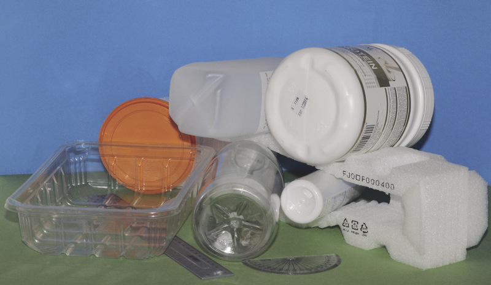

<figcaption>Figure 1: Bring plastic items such as these to school for this week's lessons.</figcaption>
</figure>

    <h2 xmlns="http://www.w3.org/1999/xhtml" id="toc-id-10">What are plastics, and what properties do they have?</h2>

    <p xmlns="http://www.w3.org/1999/xhtml" class="x--Body-text-1-3">Up to about 100 years ago, most
    clothes as well as many tools and appliances were made of plant
    or animal materials, such as cotton, wool, wood, animal skin,
    and bird feathers. But then chemistry scientists invented ways
    to make synthetic materials with similar properties to natural
    materials, and sometimes with useful properties that no natural
    materials have. Most of these synthetic materials are made from
    mineral oil, and most of them are called plastics. Synthetic
    materials are usually cheaper and lighter than natural
    materials with the same properties, and factories can mould the
    synthetic materials into unique shapes.</p>

    <div xmlns="http://www.w3.org/1999/xhtml" class="aside">
      <p class="x--Body-box-no-indent">When you look at a piece of
      cloth closely you will see that it is woven from many thin
      threads, like very thin pieces of rope. If you use a
      microscope to look even closer, you will see that each thread
      is made of different long, thin pieces that hook or twist
      into one another. These long and very thin pieces are called
      <b>fibres</b>. In the
      close-up photo below you can see the plant fibres from which
      a specific fabric is made.</p>
    </div>

    <p xmlns="http://www.w3.org/1999/xhtml" class="x--Body-indent-1-3">Rulers were once made from wood,
    but are now made from plastic. Buckets were first made from
    wood, then from galvanised steel, but now they are made from
    plastic as well. Milk came in heavy glass bottles or steel
    cans, but now comes in plastic bottles. Ropes were twisted from
    sisal plant <b>fibres</b>, but most
    ropes are now made from plastic fibres. Cars were made mostly
    from steel, wood and leather, but now many parts are made from
    plastics.</p>

    <figure xmlns="http://www.w3.org/1999/xhtml">
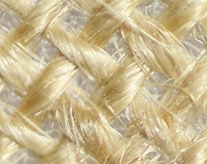

<figcaption>Figure 2: Close-up photo of plant fibres that were spun and woven to make a fabric </figcaption>
</figure>

    <p xmlns="http://www.w3.org/1999/xhtml" class="x--Body-indent-1-3">All around you, there are objects
    made of different types of plastic. Look at your shoe soles,
    your pen and ruler. In winter you may wear a fleecy jacket that
    feels like wool. That woolly substance is actually made of
    plastic fibres. Many clothes and most carpets are made from
    plastic fibres.</p>

    <p xmlns="http://www.w3.org/1999/xhtml" class="x--Body-indent-1-3">There are also disadvantages to
    synthetic materials. You learnt in Grade 8, Term 3, Chapter 8
    that most plastics do no bio-degrade as natural materials do.
    This means plastic waste lasts a very long time.</p>

    <figure xmlns="http://www.w3.org/1999/xhtml">
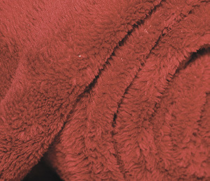

<figcaption>Figure 3: A "fleece" blanket is made from fibres of a type of plastic called polyester. </figcaption>
</figure>

    <p xmlns="http://www.w3.org/1999/xhtml" class="x--Body-indent-1-3"><b>Plastics</b> are examples of
    polymers. A polymer is a material that is made from
    <b>molecules</b> that have
    carbon atoms, hydrogen atoms and other atoms joined in long
    chains. Cotton, wool, leather, hair, starch, wood and rubber
    are examples of natural polymers. The molecule chains join
    together in different ways, so that there are many different
    kinds of polymers with different properties.</p>

    <p xmlns="http://www.w3.org/1999/xhtml" class="x--Body-indent-1-3">Plastics are man-made (synthetic)
    polymers. They are most often made from mineral oil, because
    the molecules in this oil are chains of carbon atoms, but
    shorter chains than in plastics.</p>

    <div xmlns="http://www.w3.org/1999/xhtml" class="aside">
      <p class="x--Body-box-no-indent">The word <b>plastic</b> was originally used to
      describe a property that materials such as rubber have,
      namely that they can be given a new shape. Most synthetic
      polymers have this property, and therefore they were given
      the name "plastics".</p>

      <p class="x--Body-box-no-indent"><b>Molecules</b> are made of atoms
      that join together. You know from Natural Sciences that
      molecules are much too small to see, even with a
      microscope.</p>
    </div>

    <h4 xmlns="http://www.w3.org/1999/xhtml" class="x--Head-C para-style-override-5">Different properties of plastics</h4>

    <p xmlns="http://www.w3.org/1999/xhtml" class="x--Body-Text">Depending on the type of plastic and
    the form in which it is made, it may have a few of the
    following properties:</p>

    <ul xmlns="http://www.w3.org/1999/xhtml"><li class="x--Body-text-bullet">
      <b>Transparent</b> means you can see
      clearly through the plastic.</li>

      <li class="x--Body-text-bullet">
      <b>Translucent</b> means light can
      shine through the plastic even though you can't see through
      it.</li>

      <li class="x--Body-text-bullet">
      <b>Tough</b> means the plastic will
      not break or shatter if you hit it or drop it.</li>

      <li class="x--Body-text-bullet">
      <b>Elastic</b> means you can stretch
      the plastic far and it will still return to its original
      shape.</li>

      <li class="x--Body-text-bullet">
      <b>Flexible</b> means the plastic can
      bend without breaking.</li>

      <li class="x--Body-text-bullet">
      <b>Rigid</b> means the plastic will
      resist bending and stretching, but if you apply a big enough
      force to bend or stretch it, it will break or even
      shatter.</li>

      <li class="x--Body-text-bullet">
      <b>Heat-resistant</b> means the
      plastic will not melt easily.</li>

      <li class="x--Body-text-bullet">
      <b>Fire-resistant</b> means the
      plastic will not burn easily.</li>

      <li class="x--Body-text-bullet">
      <b>Waterproof</b> means water will
      not pass through the plastic.</li>

      <li class="x--Body-text-bullet">
      <b>Foamed</b> means the plastic has
      been processed to fill it with small air bubbles.</li>

      <li class="x--Body-text-bullet">
      <b>Electrically insulate</b>d means
      the plastic does not allow electricity to conduct through
      it.</li>

      <li class="x--Body-text-bullet">
      <b>Thermally insulated</b> means the
      plastic does not allow heat to be conducted through it
      easily.</li>
    </ul><p xmlns="http://www.w3.org/1999/xhtml" class="x--Body-indent para-style-override-3">In many of
    these cases, you cannot simply say the plastic has a specific
    property or does not have a specific property. For example, you
    cannot simply say a type of plastic is flexible. You need to
    say how flexible it is, for example very flexible or only
    slightly flexible.</p>

    
<h3 xmlns="http://www.w3.org/1999/xhtml" class="x--Head-investigation">Investigate properties of plastic objects</h3>

    <p xmlns="http://www.w3.org/1999/xhtml" class="x--Body-Text para-style-override-6"><b>Work in teams of three or four.</b></p>

    <p xmlns="http://www.w3.org/1999/xhtml" class="x--Body-indent">For this activity, your teacher asked
    you to bring different plastic objects to school.</p>

    <p xmlns="http://www.w3.org/1999/xhtml" class="x--Body-indent para-style-override-24">Each team
    should take two of the objects and describe their properties.
    Write the name of the object and then write its properties next
    to it.</p>

    <p xmlns="http://www.w3.org/1999/xhtml" class="x--Body-investigation-hanging">1. Object 1:</p>
    <hr xmlns="http://www.w3.org/1999/xhtml"/><p xmlns="http://www.w3.org/1999/xhtml" class="x--Body-investigation-hanging">2. Object 2:</p>
    <hr xmlns="http://www.w3.org/1999/xhtml"/><p xmlns="http://www.w3.org/1999/xhtml" class="x--Body-indent para-style-override-24">Now swop your
    two plastic objects with the those of another team that have
    different objects. Then write down the names and properties of
    the other team's objects.</p>

    <p xmlns="http://www.w3.org/1999/xhtml" class="x--Body-investigation-hanging">3. Object 3:</p>
    <hr xmlns="http://www.w3.org/1999/xhtml"/><p xmlns="http://www.w3.org/1999/xhtml" class="x--Body-investigation-hanging">4. Object 4:</p>
    <hr xmlns="http://www.w3.org/1999/xhtml"/><h2 xmlns="http://www.w3.org/1999/xhtml" id="toc-id-11">Types of plastic, recycling, and identification codes</h2>

    <h4 xmlns="http://www.w3.org/1999/xhtml" class="x--Head-C para-style-override-5">Thermoplastic and thermosetting plastics</h4>

    <p xmlns="http://www.w3.org/1999/xhtml" class="x--Body-Text">Some plastics are soft or similar to
    liquid, until you heat them in a specific way, or mix another
    chemical with them. Then they "set" or become hard and rigid.
    After they set, you cannot make them soft again by heating
    them. So you cannot shape them into new products. They will
    burn, but not turn soft again. Plastic such as this is called
    thermosetting plastic.</p>

    <p xmlns="http://www.w3.org/1999/xhtml" class="x--Body-indent-1-3">Examples are epoxy-resin glue,
    shoe soles, car tyres, electrical plugs, pot handles,
    electronic circuit boards, and kitchen worktops. Thermosetting
    plastics cannot be recycled by simply reheating them. They can,
    however, be turned back into oil through a high-temperature
    chemical process called "pyrolysis".</p>

    <div xmlns="http://www.w3.org/1999/xhtml" class="aside">
      <p class="x--Body-box-heading"><b>Safety warning:</b></p>

      <p class="x--Body-box-no-indent">Wear protective
      heat-resistant gloves, protective glasses and fire-resistant
      clothing if you try to melt plastic, since molten plastic can
      splatter and cause serious burn injuries.</p>

      <p class="x--Body-box-no-indent">Never try to melt plastic by
      using a flame, since the plastic can start to burn, and it
      can release poisonous gases.</p>
    </div>

    <p xmlns="http://www.w3.org/1999/xhtml" class="x--Body-indent-1-3">Other plastics melt when they are
    heated, and can then be shaped into new products. These are
    called <b>thermoplastic plastic</b>. Cool drink bottles and detergent bottles are
    thermoplastic. If you pour boiling water into it you can change
    the shapes.</p>

    <h4 xmlns="http://www.w3.org/1999/xhtml" class="x--Head-C para-style-override-5">Why we have to recycle plastic</h4>

    <p xmlns="http://www.w3.org/1999/xhtml" class="x--Body-Text">Waste plastic in the environment is a
    big problem. Most types of plastic will not bio-degrade, but
    will last for hundreds of years.</p>

    <p xmlns="http://www.w3.org/1999/xhtml" class="x--Body-indent">Landfills are usually near cities so
    that garbage trucks don't have to travel too far to dump the
    waste. But that means people can never build houses on that
    land or grow crops on it.</p>

    <p xmlns="http://www.w3.org/1999/xhtml" class="x--Body-indent-1-3 para-style-override-32">Any
    materials that go into a landfill will never be used again.
    Instead, people will need to extract more raw materials such as
    oil, coal, steel, wood or glass from the earth. Then they will
    burn more coal to generate electricity in order to process the
    raw materials.</p>

    <p xmlns="http://www.w3.org/1999/xhtml" class="x--Body-indent-1-3 para-style-override-32">Not all
    plastics go into landfills, though. A lot of plastic just
    remains where someone has tossed it, or is dumped into rivers
    and then goes into the ocean.</p>

    <figure xmlns="http://www.w3.org/1999/xhtml">
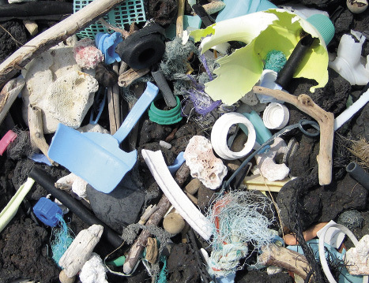

<figcaption>Figure 4: Plastic waste on a sea shore. This photo was taken in Hawaii, which is why there is black volcanic rock on the seashore.</figcaption>
</figure>

    <p xmlns="http://www.w3.org/1999/xhtml" class="x--Body-indent">In some parts of the ocean, wind
    causes the water to flow round and round in one place. These
    areas are much bigger than South Africa. They are called "ocean
    gyres". Here, millions of floating plastic bottles, bags and
    little plastic flakes about the size of this block
    ☐ gather.</p>

    <p xmlns="http://www.w3.org/1999/xhtml" class="x--Body-indent-1-3">Turtles mistake the plastic bags
    for jelly-fish and swallow them, which kills them. Large and
    small fish swallow the small plastic flakes. Sea-birds eat
    these fish and the plastic in the fish kills the sea-birds.</p>

      <p xmlns="http://www.w3.org/1999/xhtml" class="x--Body-indent">So plastic being dumped in the
    environment is a big problem. But many types of plastic can be
    <b>recycled</b>.</p>
    
    <div xmlns="http://www.w3.org/1999/xhtml" class="aside">
      <p class="x--Body-box-no-indent">To <b>recycle</b> means to process waste
      materials to make new products from it.</p>
    </div>

  
    <p xmlns="http://www.w3.org/1999/xhtml" class="x--Body-investigation-hanging">1. Write down two
    reasons why we should recycle plastic items.</p>
    <hr xmlns="http://www.w3.org/1999/xhtml"/><h4 xmlns="http://www.w3.org/1999/xhtml" class="x--Head-C para-style-override-5">Different types of plastic need different processes to recycle it</h4>

    <p xmlns="http://www.w3.org/1999/xhtml" class="x--Body-Text para-style-override-31">Waste of
    different types of plastic need to be sorted so that each type
    of plastic can be recycled separately. Manufacturers have
    agreed on a set of codes to show which type of plastic a
    product is made of.</p>

    <table xmlns="http://www.w3.org/1999/xhtml" id="table-8" class="No-Table-Style"><tbody><tr class="Row-Column-71"><td class="cell-style-override-4">
            <p class="x--Body-Text para-style-override-6"><b>Codes and         names</b></p>
          </td>

          <td class="cell-style-override-4">
            <p class="x--Body-Text para-style-override-6"><b>Examples         of products</b></p>
          </td>

          <td class="cell-style-override-4">
            <p class="x--Body-Text para-style-override-6"><b>         Properties</b></p>
          </td>

          <td class="cell-style-override-4">
            <p class="x--Body-Text para-style-override-6"><b>Recycled         products</b></p>
          </td>
        </tr><tr class="Row-Column-73"><td class="cell-style-override-4">
            <p class="x--Body-Text"><span>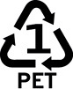</span> </p>

            <p class="x--Body-Text">polyester</p>
          </td>

          <td class="cell-style-override-4">
            <p class="x--Body-Text">cool drink bottles</p>
          </td>

          <td class="cell-style-override-4">
            <p class="x--Body-Text">clear; tough; good barrier for
            liquids and gases; heat-resistant</p>
          </td>

          <td class="cell-style-override-4">
            <p class="x--Body-Text">fibres to make fabrics for
            clothes, bags and carpets; food and drink
            containers</p>
          </td>
        </tr><tr class="Row-Column-75"><td class="cell-style-override-4">
            <p class="x--Body-Text"><span>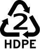</span> </p>

            <p class="x--Body-Text">high density polyethylene</p>
          </td>

          <td class="cell-style-override-4">
            <p class="x--Body-Text">bottles for milk, juice, water
            and laundry products</p>
          </td>

          <td class="cell-style-override-4">
            <p class="x--Body-Text">somewhat rigid; tough;
            resistant to chemicals; good barrier for liquids and
            gases</p>
          </td>

          <td class="cell-style-override-4">
            <p class="x--Body-Text">bottles; pipes; buckets;
            crates; flower pots; bins; plastic planks; floor
            tiles</p>
          </td>
        </tr><tr class="Row-Column-16"><td class="cell-style-override-4">
            <p class="x--Body-Text"><span>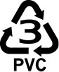</span> </p>

            <p class="x--Body-Text">polyvinyl chloride</p>
          </td>

          <td class="cell-style-override-4">
            <p class="x--Body-Text">pipes; coating (sheaves) of
            electrical wires</p>
          </td>

          <td class="cell-style-override-4">
            <p class="x--Body-Text">resistant to chemicals;
            electrically insulating; tough; can be rigid or
            flexible</p>
          </td>

          <td class="cell-style-override-4">
            <p class="x--Body-Text">gutters; floor tiles and mats;
            electrical boxes; garden hoses</p>
          </td>
        </tr><tr class="Row-Column-76"><td class="cell-style-override-4">
            <p class="x--Body-Text"><span>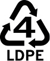</span> </p>

            <p class="x--Body-Text">low density polyethylene</p>
          </td>

          <td class="cell-style-override-4">
            <p class="x--Body-Text">thin plastic films, for example
            to cover food or books; flexible lids and bottles</p>
          </td>

          <td class="cell-style-override-4">
            <p class="x--Body-Text">flexible; tough; good for
            sealing; barrier to moisture</p>
          </td>

          <td class="cell-style-override-4">
            <p class="x--Body-Text">garbage bags; floor tiles;
            bins</p>
          </td>
        </tr><tr class="Row-Column-73"><td class="cell-style-override-4">
            <p class="x--Body-Text"><span>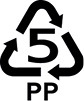</span> </p>

            <p class="x--Body-Text">polypropylene</p>
          </td>

          <td class="cell-style-override-4">
            <p class="x--Body-Text">large moulded parts, for
            example car parts</p>
          </td>

          <td class="cell-style-override-4">
            <p class="x--Body-Text">resistant to chemicals; tough;
            heat-resistant; barrier to moisture</p>
          </td>

          <td class="cell-style-override-4">
            <p class="x--Body-Text">car battery cases; brooms and
            brushes; bins; trays</p>
          </td>
        </tr><tr class="Row-Column-77"><td class="cell-style-override-4">
            <p class="x--Body-Text"><span>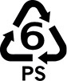</span> </p>

            <p class="x--Body-Text">polystyrene</p>
          </td>

          <td class="cell-style-override-4">
            <p class="x--Body-Text">protective packaging;
            disposable cups; bottles; trays; thermal insulation
            (especially in roofs)</p>
          </td>

          <td class="cell-style-override-4">
            <p class="x--Body-Text">can be rigid or foamed; low
            melting point; in foamed form it is an excellent heat
            insulator</p>
          </td>

          <td class="cell-style-override-4">
            <p class="x--Body-Text">plates for light switches;
            rulers; thermal insulation; foam packaging</p>
          </td>
        </tr><tr class="Row-Column-78"><td class="cell-style-override-4">
            <p class="x--Body-Text"><span>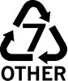</span> </p>

            <p class="x--Body-Text">other type of plastic, or more
            than one type of plastic used in the same product</p>
          </td>

          <td class="cell-style-override-4">
            <p class="x--Body-Text">acrylic or perspex sheets (can
            be used as a replacement for glass windows); "ABS" for
            making car bumpers</p>
          </td>

          <td class="cell-style-override-4">
            <p class="x--Body-Text">depends on the type of plastic;
            "ABS" has very good shock-absorbing properties</p>
          </td>

          <td class="cell-style-override-4">
            <p class="x--Body-Text">plastic planks</p>
          </td>
        </tr></tbody></table><h2 xmlns="http://www.w3.org/1999/xhtml" id="toc-id-12">What have you learnt?</h2>

    
<h3 xmlns="http://www.w3.org/1999/xhtml" class="x--Head-investigation">Identify the types of plastic on the table</h3>

    <p xmlns="http://www.w3.org/1999/xhtml" class="x--Body-Text">Look at the four plastic products your
    team looked at in the activity in section 9.1 again. Turn them
    upside down and try to find a symbol for the recycling
    code.</p>

    <p xmlns="http://www.w3.org/1999/xhtml" class="x--Body-investigation-hanging">1. Complete the table
    below:</p>

    <table xmlns="http://www.w3.org/1999/xhtml" id="table-9" class="No-Table-Style table-style-override-1"><tbody><tr class="Row-Column-15"><td class="cell-style-override-4"/>

          <td class="cell-style-override-4">
            <p class="x--Body-Text para-style-override-6"><b>Code and         name of the type of plastic</b></p>
          </td>

          <td class="cell-style-override-4">
            <p class="x--Body-Text para-style-override-6"><b>         Properties</b></p>
          </td>

          <td class="cell-style-override-4">
            <p class="x--Body-Text para-style-override-6"><b>What         products could be made from this recycled material?</b></p>
          </td>
        </tr><tr class="Row-Column-80"><td class="cell-style-override-4">
            <p class="x--Body-Text">Object 1</p>
          </td>

          <td class="cell-style-override-4"/>

          <td class="cell-style-override-4"/>

          <td class="cell-style-override-4"/>
        </tr><tr class="Row-Column-80"><td class="cell-style-override-4">
            <p class="x--Body-Text">Object 2</p>
          </td>

          <td class="cell-style-override-4"/>

          <td class="cell-style-override-4"/>

          <td class="cell-style-override-4"/>
        </tr><tr class="Row-Column-80"><td class="cell-style-override-4">
            <p class="x--Body-Text">Object 3</p>
          </td>

          <td class="cell-style-override-4"/>

          <td class="cell-style-override-4"/>

          <td class="cell-style-override-4"/>
        </tr><tr class="Row-Column-80"><td class="cell-style-override-4">
            <p class="x--Body-Text">Object 4</p>
          </td>

          <td class="cell-style-override-4"/>

          <td class="cell-style-override-4"/>

          <td class="cell-style-override-4"/>
        </tr></tbody></table><p xmlns="http://www.w3.org/1999/xhtml" class="x--Body-investigation-hanging">2. Why do
    manufacturers often choose to make their
    products from plastic?</p>
    <hr xmlns="http://www.w3.org/1999/xhtml"/><p xmlns="http://www.w3.org/1999/xhtml" class="x--Body-investigation-hanging">3. Why do
    manufacturers put recycling codes on the bottom of
    containers?</p>
    <hr xmlns="http://www.w3.org/1999/xhtml"/><p xmlns="http://www.w3.org/1999/xhtml" class="x--Body-investigation-hanging">4. Why do they not use
    the same type of plastic for everything that can be
    manufactured?</p>
    <hr xmlns="http://www.w3.org/1999/xhtml"/><p xmlns="http://www.w3.org/1999/xhtml" class="x--Body-investigation-hanging">5. Think of three
    objects that could <span class="char-style-override-12">not</span> be made of plastic.</p>
    <hr xmlns="http://www.w3.org/1999/xhtml"/>
    
<h3 xmlns="http://www.w3.org/1999/xhtml" class="x--Head-investigation">Next week</h3>

    <p xmlns="http://www.w3.org/1999/xhtml" class="x--Body-Text">In the next chapter, you will learn how
    plastics are recycled to make new products.</p>

    
  </div>
</div>